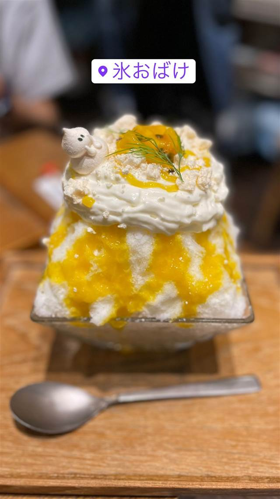
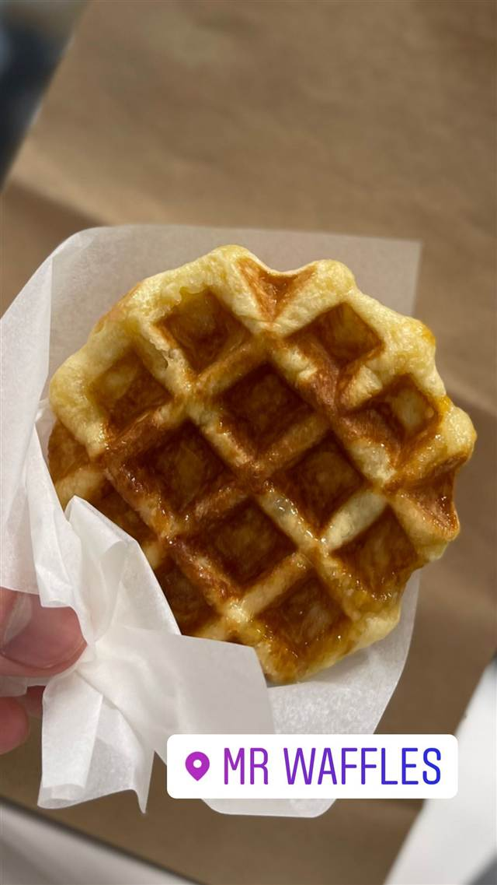
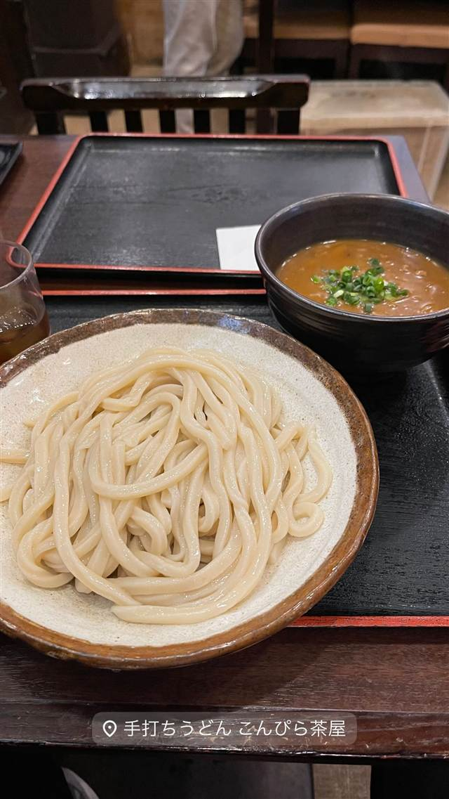

うどん 慎
一晩寝かせ強いコシを出す、注文後に打つ明太釜玉うどん
うどん 慎
うどん慎は2011年開業、南新宿の12席だけの小さなうどん店。注文ごとに打ち・切り・茹でる徹底ぶりで強いコシの麺を出し、1時間待ちの行列ができる食べログ百名店の常連。
TRIVIA
豆知識
- 生地を一晩寝かせてから打つ手間により強いコシを出している
- 近年は外国人観光客からの人気も高まり行列が絶えない
REVIEWS
世間の評判
3.69食べログ
打ち立てうどんと整理券の行列
- 打ち立てで艶のあるうどんはコシと喉ごしの良さを評価する声が多い
- 整理券があっても休日は2時間ほど待つことがあると報告されている
- メニューの中には特別なものが2000円を超え高いと感じる声もある
食べログ 口コミ2674件
| 創業 | 2011年開業 |
|---|---|
| 看板 | 明太釜玉うどん、かしわ天ざるうどんなど |
| こだわり | 注文を受けてから打ち・切り・茹でる「打ちたて・切りたて・茹でたて」。生地を一晩寝かせて熟成させ強いコシを出す。出汁は複数の鰹節と釧路産昆布、香川産醤油を使用 |
| 掲載・評価 | 食べログ百名店の常連 |
| どこから | 都心 |
| 行くなら | 行列 |
| 予算 | 昼 ¥1,000～¥1,999 夜 ¥1,000～¥1,999 |
| 場所 | 新宿駅(南口) 東京都渋谷区代々木(南新宿・新宿駅南口周辺) |
| メモ | わずか12席の小さな店。行列必至で1時間待ちになることも。南新宿・甲州街道沿い |
食べたもの：明太釜玉うどん
NEARBY
近い店・同じ系統の店
-

かき氷 西武新宿駅 氷おばけ 歌舞伎町の居酒屋を間借り、メレンゲの「おばけ」がのるかき氷 昼 ¥1,000～¥1,999 夜 ¥1,000～¥1,999 -

パンケーキ・フレンチトースト 新宿 Mr.waffle ルミネ新宿店 ベルギーで3か月に500個食べ歩いた末生まれたリエージュワッフル 昼 ～¥999 夜 ～¥999 -
 うどん・ほうとう 東京駅
難波千日前 釜たけうどん 八重洲北口店
脱サラ店主が独学で生んだ、半熟卵天ぷらのちく玉天ぶっかけうどん
昼 ～¥999 夜 ～¥999
うどん・ほうとう 東京駅
難波千日前 釜たけうどん 八重洲北口店
脱サラ店主が独学で生んだ、半熟卵天ぷらのちく玉天ぶっかけうどん
昼 ～¥999 夜 ～¥999
-
 うどん・ほうとう 恵比寿駅（西口）
うどん山長
1859年創業のかつお節専門店が手がける自家製だしのうどん
昼 ¥1,000～¥1,999 夜 ¥4,000～¥4,999
うどん・ほうとう 恵比寿駅（西口）
うどん山長
1859年創業のかつお節専門店が手がける自家製だしのうどん
昼 ¥1,000～¥1,999 夜 ¥4,000～¥4,999
-
 うどん・ほうとう 赤坂見附／赤坂
室町 砂場 赤坂店
室町砂場唯一ののれん分け店で天ざる天もりを考案した元祖
昼 ¥2,000～¥2,999 夜 ¥5,000～¥5,999
うどん・ほうとう 赤坂見附／赤坂
室町 砂場 赤坂店
室町砂場唯一ののれん分け店で天ざる天もりを考案した元祖
昼 ¥2,000～¥2,999 夜 ¥5,000～¥5,999
-

うどん・ほうとう 目黒駅 手打ちうどん こんぴら茶屋 1983年創業、香川出身の店主が受け継ぐ牛かれーうどん 昼 ¥1,000～¥1,999 夜 ¥1,000～¥1,999